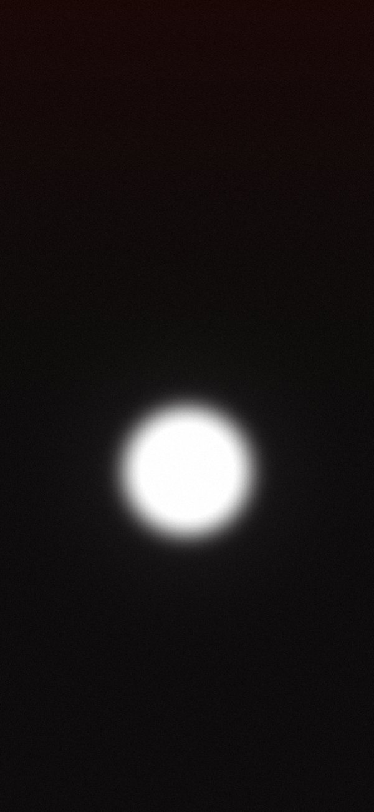
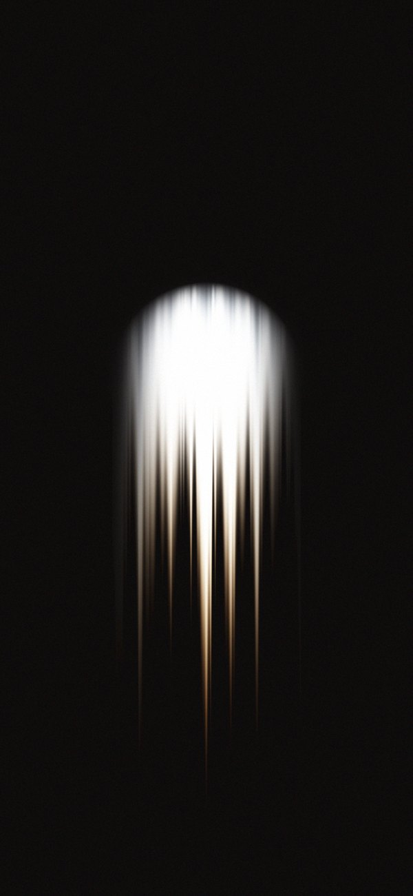
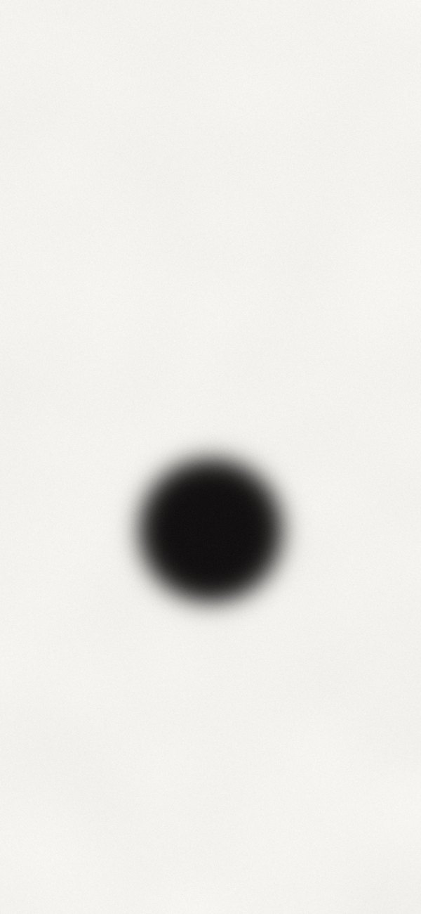
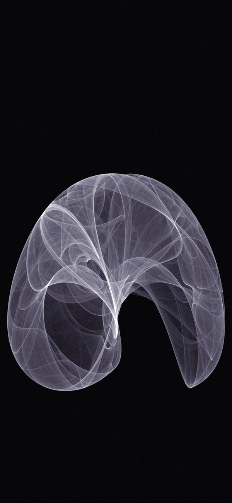
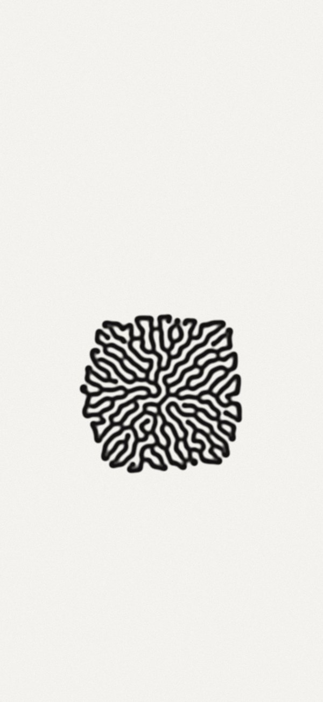
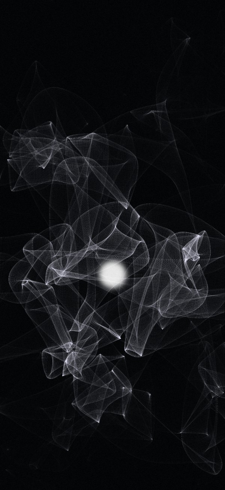

service 001 · offeringwhite dotsign · free for seven days
receive
a quiet house for given things.
every seventh day, a service.
some things are offered. free, for seven days.
some things are kept. one, three, twelve, thirty-three, three hundred thirty-three.
volume i. 33 objects. then the doors close. volume ii may open later.






a quiet house for given things.
we didn't make the light. we didn't make the sound. we didn't make the hands. we only arrange what was handed to us. gratitude is the first material.
in a field and in a feed. in a stone, a sound, a forgotten page. there is no online or offline for god. we keep the traces, in pixels and in matter.
every object here is proof that something happened to someone. we don't sell things. we pass on evidence.
every seventh day something is free. this is not a promotion. grace can't be owned. it can only be received.
others exist in small numbers. one, three, twelve, thirty-three, three hundred thirty-three. the number is part of the meaning. fewer keepers, heavier trust.
soft light. white space. slow sound. we don't shout. if you found us, you were already looking.
brands wore the old words out. so we made new ones. the words arrive with the objects.
artists, musicians, people who write code at night. every guest brings a world. this is a shared house.
a small piece of software can hold attention like a candle. we make instruments for listening, waiting, wondering.
volume i. thirty-three objects. one every seventh day. then the doors close. volume ii may open later. the ending is what gives each artifact its weight.
the world is loud and always in a hurry. we are not. nothing here asks you to rush, to scroll faster or to want more. stop for a moment. look. listen. that is all we ask of you.
amen.
333